수업 흐름
한 단계가 1분 안에 이렇게 돌아갑니다
교사 노트북 한 대가 진행판이 됩니다. 학생은 같은 주소에 들어와 있기만 하면 되고, 화면 이동은 교사가 맡습니다.
단계 열기
번호 버튼이나 → 키로 다음 문제를 엽니다.
응답하기
보기 고르기, 수 입력, 이유 한 줄 쓰기.
반 그래프
응답이 모이는 대로 그래프와 번호판이 바뀝니다.
정답 공개
정답률을 확인하고, 필요하면 10초·30초 마감.
생각 나누기
모인 이유·의미 문장을 띄워 토의합니다.
14차시 지도
교과서 순서 그대로, 특별 활동 셋을 더해
대푯값부터 상대도수까지 교과서 문제와 문장을 그대로 옮겼고, 우리 반 설문·인천대공원 이용객 자료·모둠 통계 프로젝트를 더했습니다. 막대 길이가 그 차시의 단계 수입니다.
차시별 단계 수
모두 121단계 · 교과서 226~258쪽
121단계는 이렇게 짜여 있어요
단계마다 학생이 하는 일
- 수 답하기평균·도수·상대도수 직접 구하기43
- 퀴즈보기 고르기 · O / X25
- 이유 쓰기고르고 까닭을 한 줄로18
- 개념 카드빈칸 채우기 · 교사가 눌러 채점15
- 우리 반 설문답이 곧 그래프 자료10
- 글쓰기해석 문장 · 돌아보기8
- 슬라이더값을 움직이면 대푯값이 함께2
수업 장면
실제 화면으로 보는 수업
아래 화면은 모두 수업 사이트를 그대로 캡처한 것입니다. 학생 이름은 시연용 가상 이름입니다.
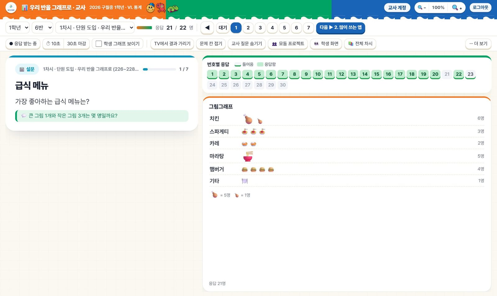
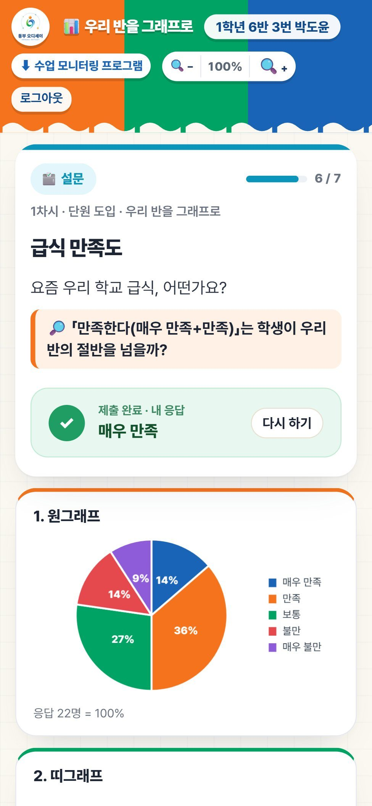
첫 시간, 우리 반이 자료가 됩니다
급식 메뉴, 많이 쓰는 앱, 통학 시간… 학생이 고르는 순간 그림그래프·막대·원·띠·꺾은선그래프가 그려집니다. 이렇게 모은 통학 시간과 급식 메뉴는 2·3차시 대푯값 문제에서 다시 쓰입니다.
- 휴대폰에서도 보기 버튼이 크게
- 학생 화면 그래프는 교사가 켤 때만 보여 앞선 응답에 휩쓸리지 않음
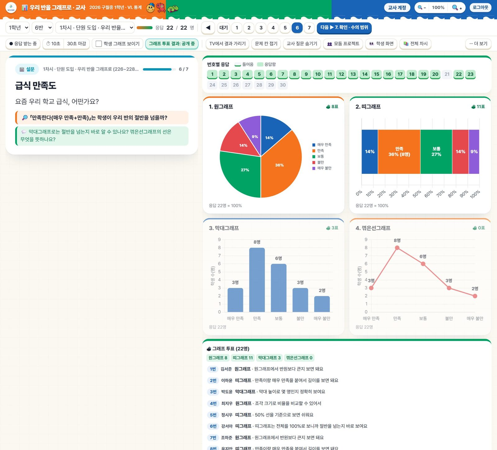
같은 자료, 네 가지 그래프 — 어느 것이 알맞을까?
"만족한다는 학생이 반을 넘을까?"라는 탐구 질문에 답하기 좋은 그래프를 학생이 직접 고르고 까닭을 씁니다. 득표 수와 번호별 이유가 교사 화면에 바로 모입니다.
- 원·띠그래프는 전체를 100%로, 막대·꺾은선은 명 수로
- [투표 결과 공개]로 학생 화면에 결과 띄우기
빈칸 정답률
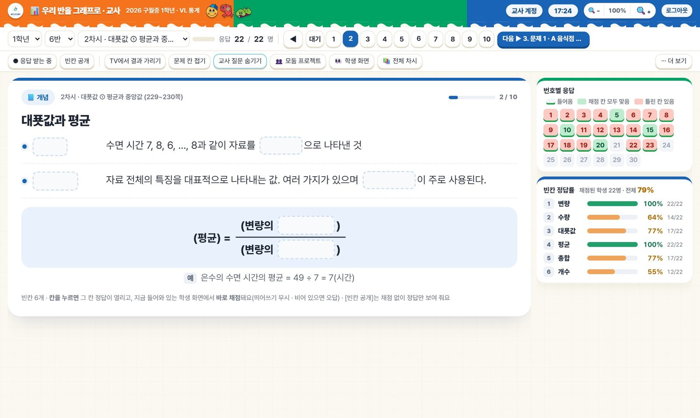
설명은 짧게, 핵심 낱말은 학생이 채우게
개념 카드 15장에 빈칸 53칸이 있습니다. 개념 이름은 직접 쓰고 나머지는 목록에서 고릅니다. 교사가 빈칸을 누르면 그때 화면 앞에 있는 학생들이 한꺼번에 채점되고, 빈칸마다 반 정답률이 막대로 보입니다.
- 띄어쓰기는 무시하고 채점
- 번호판에 '모두 맞음 / 틀린 칸 있음'이 색으로
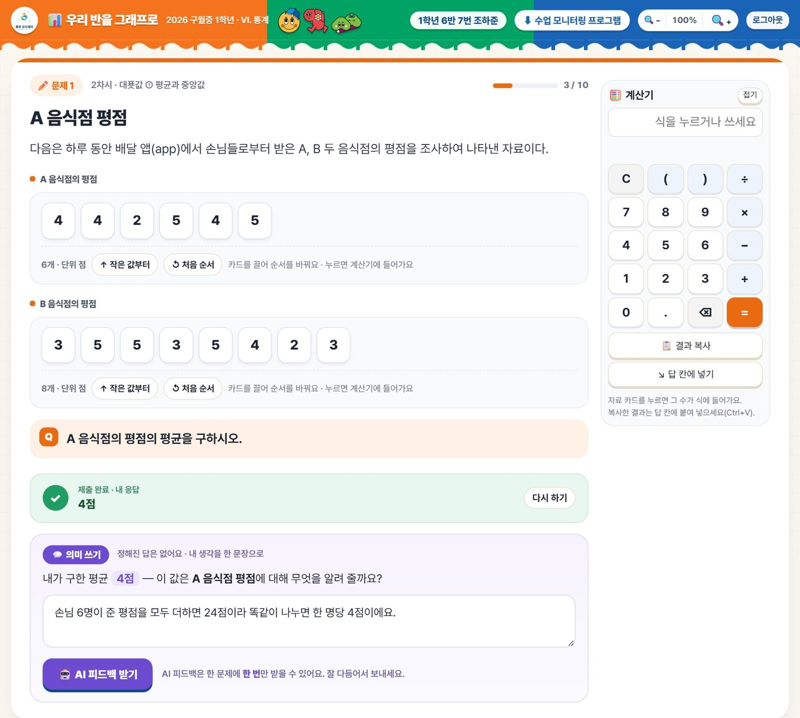
값을 구하고, 그 값이 무슨 뜻인지까지
자료는 끌어서 순서를 바꾸는 카드라 중앙값을 찾을 때 직접 크기순으로 늘어놓습니다. 카드를 누르면 오른쪽 계산기에 들어갑니다. 실생활 문제에서는 답을 낸 뒤 "이 값이 무엇을 알려 주는지" 한 문장을 쓰고, AI 피드백을 한 번 받습니다.
- AI는 바른 값을 대신 알려 주지 않고 다시 생각할 거리를 줌
- 교사 화면에 번호·이름·구한 값과 함께 모임
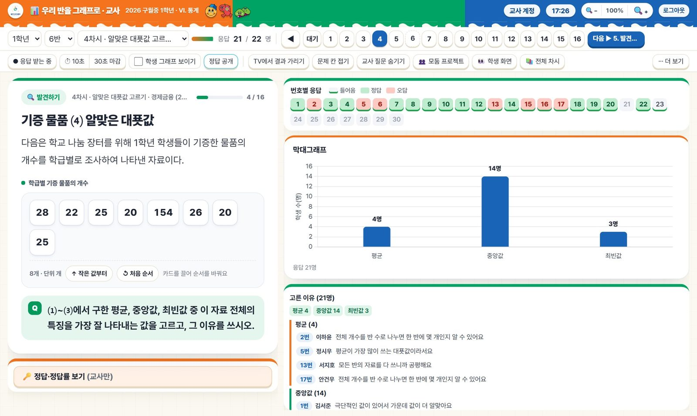
"왜 중앙값이야?" — 이유가 보이는 토의
154개를 기증한 반 하나 때문에 평균이 커지는 자료에서 어떤 대푯값이 알맞은지 고르고 까닭을 씁니다. 교사 화면에는 선택지별로 이유가 묶여 나와, 서로 다른 생각을 바로 짚어 토의를 시작할 수 있습니다.
- 18개 단계가 이 방식
- 슬라이더 단계에서는 교사가 값을 움직이면 모두의 대푯값이 함께 바뀜
교사 도구
TV에 띄우고, 시간을 재고, 학생 화면을 엿보고
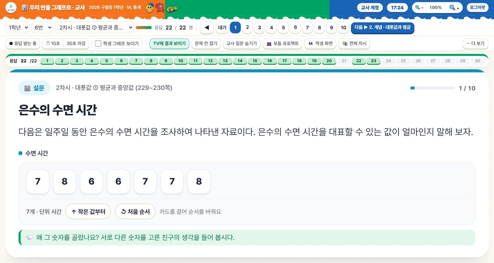
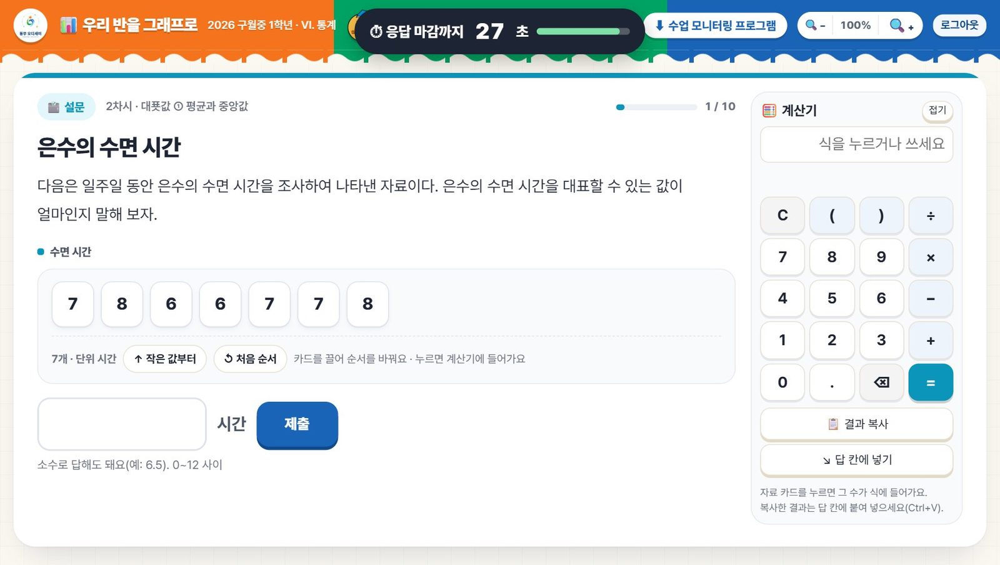
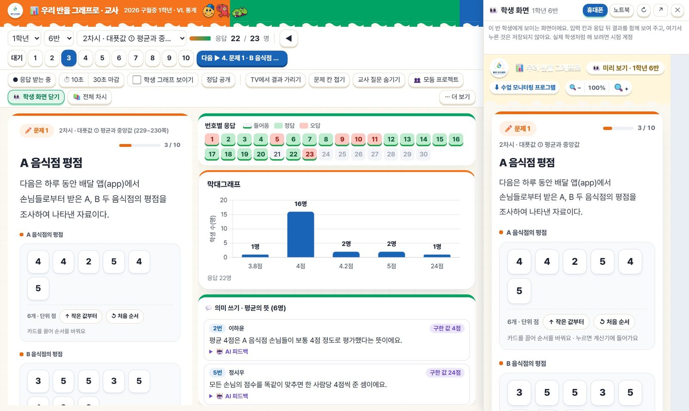
교사 노트북 · 진행판
teacher 화면. 왼쪽 문제, 오른쪽 답안 대시보드.
- 학년·반·차시 고르기, 단계 이동
- 정답·풀이·교사 질문은 교사에게만
- 반 기록 CSV 내려받기
교실 TV · 함께 보기
교사 화면을 TV로 보내고 [TV에서 결과 가리기].
- 화면 배율 70~180%
- 교사 질문 숨기기·문제 칸 접기
학생 노트북 · 태블릿 · 휴대폰
같은 주소, 학교 구글 계정으로 로그인.
- 명렬표로 반·번호·이름 자동
- 교사가 연 단계만 보임
- 새 버전이 나오면 알림
12~14차시 · 통계 프로젝트
모둠이 묻고, 모으고, 분석하고, 포스터로
통계적 문제해결 과정을 사이트 안에서 끝까지 해 봅니다. 교사가 모둠을 편성하고 단계를 열면, 모둠은 공동 편집판에서 질문을 정하고 설문을 만들어 다른 반에도 돌립니다.
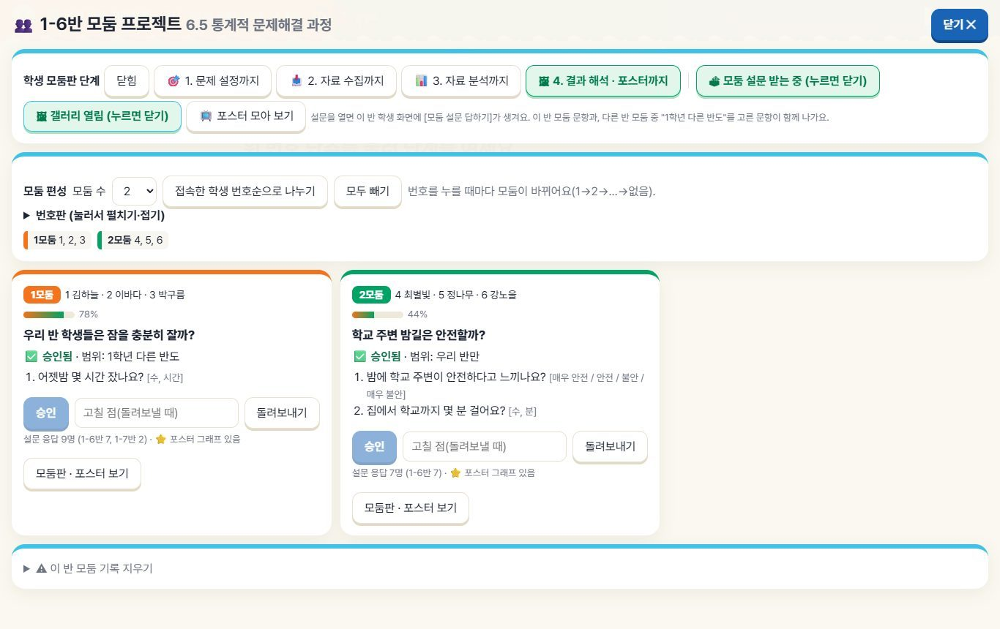
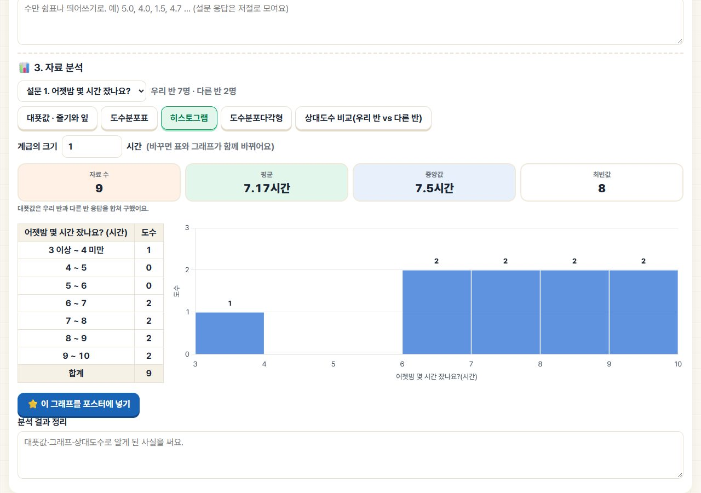
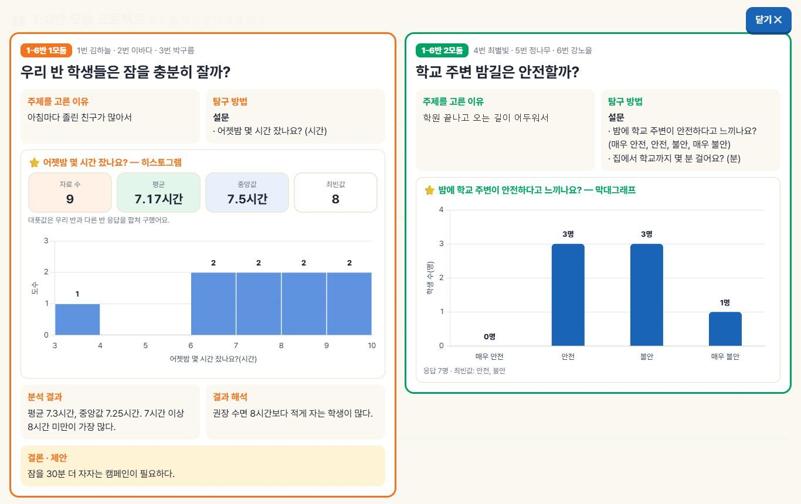
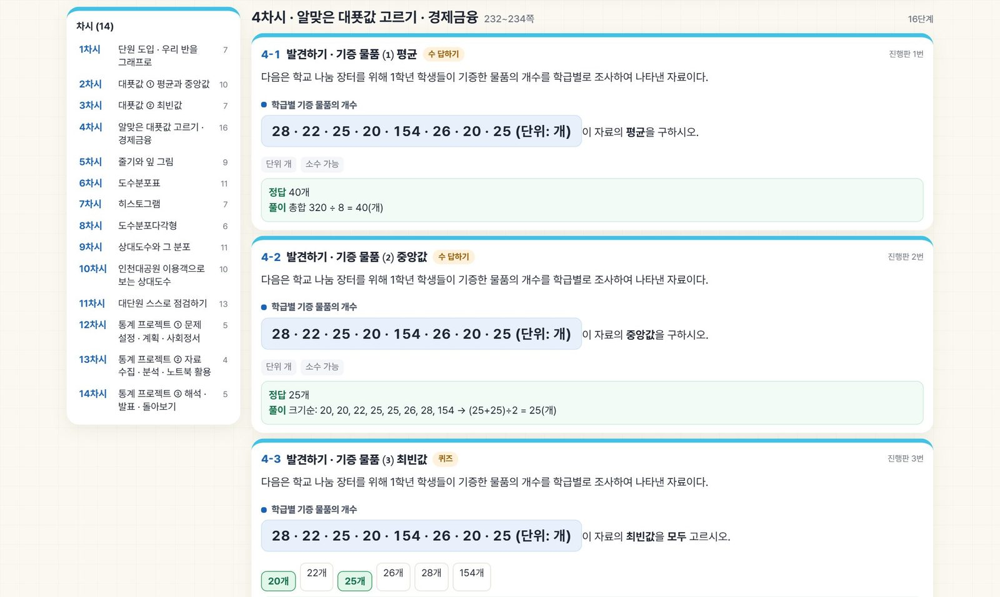
전체 차시를 한 페이지에서 미리 보기
교사 화면의 [📚 전체 차시]를 누르면 121단계의 발문·보기·정답·풀이·교사 질문을 새 탭에서 훑어볼 수 있습니다. 찾기 기능으로 문제를 바로 찾아 수업 흐름을 미리 짭니다.
시작하기
주소 하나, 로그인 한 번
같은 주소로 들어오기
교사·학생 모두 han.gl/수학6단원. 교사 계정이면 교사 화면이 저절로 열립니다.
학교 구글 계정으로 로그인
학생은 명렬표로 학년·반·번호·이름이 자동으로 잡혀 따로 입력하지 않습니다.
교사: 반과 차시 고르고 단계 열기
[대기] 화면에서 시작해 번호 버튼이나 → 키로 넘깁니다. 수업 중에는 교사 화면을 켜 두세요.
어떤 기기에서 되나요?
크롬·엣지·사파리 같은 최신 브라우저가 있는 노트북, 태블릿, 휴대폰이면 됩니다. 설치할 프로그램은 없습니다. 학생 화면은 휴대폰 폭에 맞춰 보기 버튼이 커집니다.
로그인이 안 되는 학생이 있어요.
학교 구글 계정(@guwol.icems.kr)으로 로그인해야 하고, 명렬표에 있는 계정이어야 합니다. 개인 구글 계정으로 들어오면 "명렬표에 없는 계정" 안내가 뜹니다.
교사 화면을 꺼도 되나요?
수업 중에는 켜 두세요. 학생 화면의 반 그래프, 10초·30초 마감은 교사 화면이 계산해서 보내 줍니다.
TV에 띄우면 학생 이름이 보이나요?
교사 화면의 글 응답 카드에는 번호와 이름이 나옵니다. 교실 TV에 띄울 때는 [TV에서 결과 가리기]를 켜면 문제만 크게 보이고 이름·답·그래프는 가려집니다.
AI 피드백은 어떻게 쓰이나요?
실생활 대푯값 문제에서 학생이 쓴 '의미 쓰기' 문장에만, 한 문제에 한 번 피드백을 줍니다. 정답 값을 대신 알려 주지 않고 다시 생각할 거리를 제안하며, 학생 이름은 보내지 않습니다.